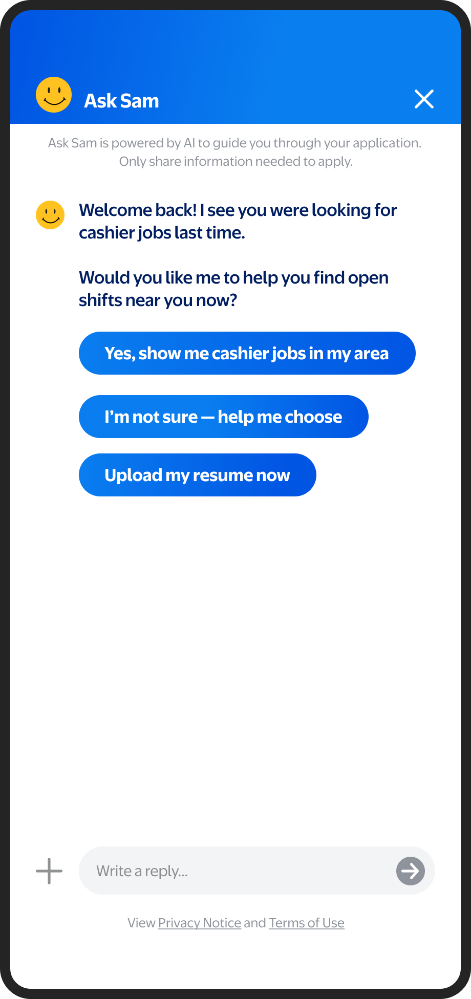
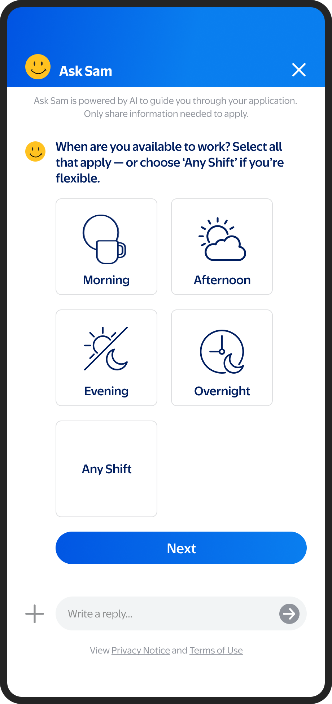
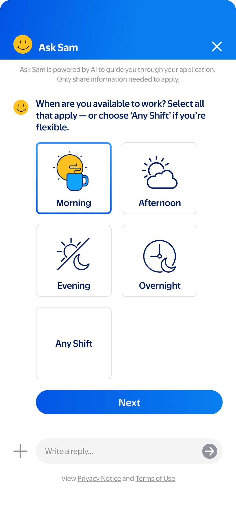

Designed end-to-end in 24 hours. A conversational AI experience that replaced Walmart's fragmented, multi-system hiring flow for hourly store associates.
⚠ Covered by NDA. Details generalized to honor confidentiality.
24h
To deliver the complete end-to-end concept
80+
Screens in the legacy assessment candidates had to complete
1
Conversation to apply, schedule, and accept an offer
Overview
From exploratory ask to Creative Director
This didn't start as a project. After a meeting with Paradox — a leader in Chat-to-Apply — leadership asked what a Walmart-specific version could look like. Instead of recreating what we'd seen, I proposed something differentiated.
Within 24 hours I delivered an end-to-end concept: apply, schedule, accept, and learn about Walmart through one AI-driven conversation. The concept reshaped internal thinking about AI-enabled hiring and earned early leadership support — positioning me as Creative Director for the initiative.
The Problem
Millions of candidates. A process designed to lose them.
Before redesigning anything, I mapped the full candidate journey — from initial job search through third-party systems, assessments, and offer acceptance. What I found was a fragmented experience that actively drove people away.
Candidate drop-off by stage
Job discovery100%
Account creation68%
↓ 32% lost before ever starting
Application submitted41%
↓ 27% dropped during application
Assessment started28%
↓ 13% lost before 80+ screen assessment
Assessment completed14%
↓ 14% abandoned mid-assessment
Offer accepted8%
↓ 92% of candidates never reached this point
Design Thinking
Old flow vs. new conversation
I personally applied for hourly roles at competing retailers to experience Chat-to-Apply flows firsthand. The insight was clear: friction isn't just inconvenient — for first-time job seekers, it signals you're not welcome.
Before
After
Find a job on careers.walmart.com
Must create an account before applying.
Account wall before any commitment
Redirected to StoreJobs (third party)
Dropped into an external system with no continuity.
Breaks trust — "Is this still Walmart?"
80+ screen assessment
No progress indicator. No context. Most first-time applicants abandon here.
No end in sight
Interview scheduling (separate system)
Fourth platform. Candidate must re-enter information.
Still no confirmation of progress
Meet Sam — one conversation starts it all
A friendly AI guide surfaces on the careers page. No account required.
Zero friction entry point
Role match in 3 questions
Sam asks about availability, location, and role preference — in plain language.
Feels like a conversation, not a form
Apply, schedule, and accept — in one flow
The entire journey happens within one experience. No redirects, no re-entry.
One system. Clear progress. Human tone.
Learn about Walmart while you wait
Sam shares culture content between steps — building confidence and connection.
Turns dead time into brand-building
01 · Recognition

02 · Availability

03 · Selection

Sam — "Sparky And Me" — was named to align with Walmart's Me@ product family. A distinct visual language was built from scratch: custom illustrated icons, Walmart's brand color system, and a conversational tone designed to make a first-time applicant feel capable and seen. Not a reskinned off-the-shelf tool.
Design Decisions
Four principles that shaped every screen
01
Zero account wall
Candidates can start before creating an account. Commitment follows value, not the other way around.
02
Human tone, always
Every Sam message was written to sound like a helpful person — no jargon, no passive voice, no corporate hedging.
03
One system, full journey
Apply, schedule, and accept — all within Sam. No redirects, no re-entering information.
04
Distinct visual language
Custom icons and Walmart's brand palette, built from scratch — not a reskinned off-the-shelf tool.
Outcome
A concept that became a platform
The 24-hour concept earned leadership buy-in and repositioned the project from exploratory to Walmart's new candidate application experience. Deloitte is currently integrating the direction into the broader hiring platform.
As Creative Director, I held the vision through delivery — ensuring the final experience stayed true to the human, conversational principles established in the original concept.